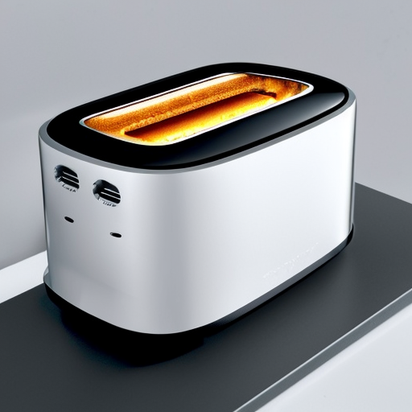

! pip install -Uqq fastcore transformers diffusersImplementing Stable Diffusion From Its Components
Creating a Diffuser that Diffuses Stable-y
Diffusion
Creating Models
Implementing stable diffusion from the 🤗 🧨 library.
This notebook follows the fastai style guide.

In this notebook, we’ll implement stable diffusion from its various components through the Hugging Face Diffusers library.
At the end, we’ll have our own custom stable diffusion class, from which we can generate images as simply as diffuser.diffuse().
If you would like a refresher, I’ve summarized at a high level how a diffuser is trained in this post. Though this notebook focuses on inference and not the training aspect, the linked summary may be helpful.
Let’s begin.
Overview
Before we get hands on with the code, let’s refresh how inference works for a diffuser.
- We input a prompt to the diffuser.
- This prompt is given a mathematical representation (an embedding) through the text encoder.
- A latent comprised of noise is produced.
- The U-Net predicts the noise in the latent in conjunction with the prompt.
- The predicted noise is subtracted from the latent in conjunction with the scheduler.
- After many iterations, the denoised latent is decompressed to produce our final generated image.
The main components in use are:
- a text encoder,
- a U-Net,
- and a VAE decoder.
Setup
1import logging; logging.disable(logging.WARNING)
from fastcore.all import *
from fastai.imports import *
from fastai.vision.all import *- 1
- Hugging Face can be very verbose.
Get Components
CLIP Components
To process the prompt, we need to download a tokenizer and a text encoder. The tokenizer will split the prompt into tokens while the text encoder will convert the tokens into a numerical representation (an embedding).
from transformers import CLIPTokenizer, CLIPTextModel
tokz = CLIPTokenizer.from_pretrained('openai/clip-vit-large-patch14', torch_dtype=torch.float16)
txt_enc = CLIPTextModel.from_pretrained('openai/clip-vit-large-patch14', torch_dtype=torch.float16).to('cuda')float16 is used for faster performance.
U-Net and VAE
The U-Net will predict the noise in the image, while the VAE will decompress the generated image.
from diffusers import AutoencoderKL, UNet2DConditionModel
vae = AutoencoderKL.from_pretrained('stabilityai/sd-vae-ft-ema', torch_dtype=torch.float16).to('cuda')
unet = UNet2DConditionModel.from_pretrained("CompVis/stable-diffusion-v1-4", subfolder="unet", torch_dtype=torch.float16).to("cuda")Scheduler
The scheduler will control how much noise is intially added to the image, and will also control how much of the noise predicted from the U-Net will be subtracted from the image.
from diffusers import LMSDiscreteScheduler
sched = LMSDiscreteScheduler(
beta_start = 0.00085,
beta_end = 0.012,
beta_schedule = 'scaled_linear',
num_train_timesteps = 1000
); schedLMSDiscreteScheduler {
"_class_name": "LMSDiscreteScheduler",
"_diffusers_version": "0.16.0",
"beta_end": 0.012,
"beta_schedule": "scaled_linear",
"beta_start": 0.00085,
"num_train_timesteps": 1000,
"prediction_type": "epsilon",
"trained_betas": null
}Define Generation Parameters
The six main parameters needed for generation are:
- The prompt
- The width and height of the image
- A number describing how noisy the output image is to be (the number of inference steps)
- A number describing how much the diffuser should stick to the prompt (the guidance scale)
- The batch size
- The seed
prompt = ['a photograph of an astronaut riding a horse']
w, h = 512, 512
n_inf_steps = 70
g_scale = 7.5
bs = 1
seed = 77Encode Prompt
Now we need to parse the prompt. To do so, we’ll first tokenize it, and then encode the tokens to produce an embedding.
First, let’s tokenize.
txt_inp = tokz(
prompt,
padding = 'max_length',
max_length = tokz.model_max_length,
truncation = True,
return_tensors = 'pt'
); txt_inp{'input_ids': tensor([[49406, 320, 8853, 539, 550, 18376, 6765, 320, 4558, 49407,
49407, 49407, 49407, 49407, 49407, 49407, 49407, 49407, 49407, 49407,
49407, 49407, 49407, 49407, 49407, 49407, 49407, 49407, 49407, 49407,
49407, 49407, 49407, 49407, 49407, 49407, 49407, 49407, 49407, 49407,
49407, 49407, 49407, 49407, 49407, 49407, 49407, 49407, 49407, 49407,
49407, 49407, 49407, 49407, 49407, 49407, 49407, 49407, 49407, 49407,
49407, 49407, 49407, 49407, 49407, 49407, 49407, 49407, 49407, 49407,
49407, 49407, 49407, 49407, 49407, 49407, 49407]]), 'attention_mask': tensor([[1, 1, 1, 1, 1, 1, 1, 1, 1, 1, 0, 0, 0, 0, 0, 0, 0, 0, 0, 0, 0, 0, 0, 0,
0, 0, 0, 0, 0, 0, 0, 0, 0, 0, 0, 0, 0, 0, 0, 0, 0, 0, 0, 0, 0, 0, 0, 0,
0, 0, 0, 0, 0, 0, 0, 0, 0, 0, 0, 0, 0, 0, 0, 0, 0, 0, 0, 0, 0, 0, 0, 0,
0, 0, 0, 0, 0]])}The token 49407 is a padding token and represents '<|endoftext|>'. These tokens have been given an attention mask of 0.
tokz.decode(49407)'<|endoftext|>'Now using the text encoder, we’ll create an embedding out of these tokens.
txt_emb = txt_enc(txt_inp['input_ids'].to('cuda'))[0].half(); txt_embtensor([[[-0.3884, 0.0229, -0.0523, ..., -0.4902, -0.3066, 0.0674],
[ 0.0292, -1.3242, 0.3076, ..., -0.5254, 0.9766, 0.6655],
[ 0.4609, 0.5610, 1.6689, ..., -1.9502, -1.2266, 0.0093],
...,
[-3.0410, -0.0674, -0.1777, ..., 0.3950, -0.0174, 0.7671],
[-3.0566, -0.1058, -0.1936, ..., 0.4258, -0.0184, 0.7588],
[-2.9844, -0.0850, -0.1726, ..., 0.4373, 0.0092, 0.7490]]],
device='cuda:0', dtype=torch.float16, grad_fn=<NativeLayerNormBackward0>)txt_emb.shapetorch.Size([1, 77, 768])Embeddings for CFG
We also need to create an embedding for an empty prompt, also known as the uncondtional prompt. This embedding is what is used to control the guidance.
txt_inp['input_ids'].shapetorch.Size([1, 77])1max_len = txt_inp['input_ids'].shape[-1]
uncond_inp = tokz(
2 [''] * bs,
padding = 'max_length',
max_length = max_len,
return_tensors = 'pt',
); uncond_inp- 1
- We use the maximum length of the prompt so the unconditional prompt embedding matches the size of the text prmpt embedding.
- 2
- We also multiply the list containing the empty prompt with the batch size so we have an empty prompt for each text prompt.
{'input_ids': tensor([[49406, 49407, 49407, 49407, 49407, 49407, 49407, 49407, 49407, 49407,
49407, 49407, 49407, 49407, 49407, 49407, 49407, 49407, 49407, 49407,
49407, 49407, 49407, 49407, 49407, 49407, 49407, 49407, 49407, 49407,
49407, 49407, 49407, 49407, 49407, 49407, 49407, 49407, 49407, 49407,
49407, 49407, 49407, 49407, 49407, 49407, 49407, 49407, 49407, 49407,
49407, 49407, 49407, 49407, 49407, 49407, 49407, 49407, 49407, 49407,
49407, 49407, 49407, 49407, 49407, 49407, 49407, 49407, 49407, 49407,
49407, 49407, 49407, 49407, 49407, 49407, 49407]]), 'attention_mask': tensor([[1, 1, 0, 0, 0, 0, 0, 0, 0, 0, 0, 0, 0, 0, 0, 0, 0, 0, 0, 0, 0, 0, 0, 0,
0, 0, 0, 0, 0, 0, 0, 0, 0, 0, 0, 0, 0, 0, 0, 0, 0, 0, 0, 0, 0, 0, 0, 0,
0, 0, 0, 0, 0, 0, 0, 0, 0, 0, 0, 0, 0, 0, 0, 0, 0, 0, 0, 0, 0, 0, 0, 0,
0, 0, 0, 0, 0]])}uncond_inp['input_ids'].shapetorch.Size([1, 77])uncond_emb = txt_enc(uncond_inp['input_ids'].to('cuda'))[0].half()
uncond_emb.shapetorch.Size([1, 77, 768])We can then concatenate both the unconditonal embedding and the text embedding together. This allows images to be generated from each prompt without having to go through the U-Net twice.
embs = torch.cat([uncond_emb, txt_emb])Create Noisy Image
It’s now time to create our noisy image, which will be the starting point for generation.
We’ll create a single latent that is 64 by 64 pixels, and that also has 4 channels. After the latent is denoised, we’ll decompress it to a 512 by 512 pixel image with 3 channels.
bs, unet.config.in_channels, h//8, w//8(1, 4, 64, 64)print(torch.randn((2, 3, 4)))
print(torch.randn((2, 3, 4)).shape)tensor([[[ 0.2818, 1.9993, -0.2554, -1.8170],
[-0.5899, 0.6199, 0.4697, 0.8363],
[ 0.4416, -1.1702, 0.0392, -1.3377]],
[[ 1.6029, 0.2883, -0.4365, 0.5624],
[-1.4361, -0.6055, 0.9542, -0.2457],
[-1.4045, -0.2218, 0.3492, -0.1245]]])
torch.Size([2, 3, 4])torch.manual_seed(seed)
lats = torch.randn((bs, unet.config.in_channels, h//8, w//8)); lats.shapetorch.Size([1, 4, 64, 64])The latent is a rank 4 tensor. 1 refers to the batch size, which is the number of images being generated. 4 is the number of channels, and 64 is the number of pixel with regard to both height and width.
lats = lats.to('cuda').half(); latstensor([[[[-0.5044, -0.4163, -0.1365, ..., -1.6104, 0.1381, 1.7676],
[ 0.7017, 1.5947, -1.4434, ..., -1.5859, -0.4089, -2.8164],
[ 1.0664, -0.0923, 0.3462, ..., -0.2390, -1.0947, 0.7554],
...,
[-1.0283, 0.2433, 0.3337, ..., 0.6641, 0.4219, 0.7065],
[ 0.4280, -1.5439, 0.1409, ..., 0.8989, -1.0049, 0.0482],
[-1.8682, 0.4988, 0.4668, ..., -0.5874, -0.4019, -0.2856]],
[[ 0.5688, -1.2715, -1.4980, ..., 0.2230, 1.4785, -0.6821],
[ 1.8418, -0.5117, 1.1934, ..., -0.7222, -0.7417, 1.0479],
[-0.6558, 0.1201, 1.4971, ..., 0.1454, 0.4714, 0.2441],
...,
[ 0.9492, 0.1953, -2.4141, ..., -0.5176, 1.1191, 0.5879],
[ 0.2129, 1.8643, -1.8506, ..., 0.8096, -1.5264, 0.3191],
[-0.3640, -0.9189, 0.8931, ..., -0.4944, 0.3916, -0.1406]],
[[-0.5259, 1.5059, -0.3413, ..., 1.2539, 0.3669, -0.1593],
[-0.2957, -0.1169, -2.0078, ..., 1.9268, 0.3833, -0.0992],
[ 0.5020, 1.0068, -0.9907, ..., -0.3008, 0.7324, -1.1963],
...,
[-0.7437, -1.1250, 0.1349, ..., -0.6714, -0.6753, -0.7920],
[ 0.5415, -0.5269, -1.0166, ..., 1.1270, -1.7637, -1.5156],
[-0.2319, 0.9165, 1.6318, ..., 0.6602, -1.2871, 1.7568]],
[[ 0.7100, 0.4133, 0.5513, ..., 0.0326, 0.9175, 1.4922],
[ 0.8862, 1.3760, 0.8599, ..., -2.1172, -1.6533, 0.8955],
[-0.7783, -0.0246, 1.4717, ..., 0.0328, 0.4316, -0.6416],
...,
[ 0.0855, -0.1279, -0.0319, ..., -0.2817, 1.2744, -0.5854],
[ 0.2402, 1.3945, -2.4062, ..., 0.3435, -0.5254, 1.2441],
[ 1.6377, 1.2539, 0.6099, ..., 1.5391, -0.6304, 0.9092]]]],
device='cuda:0', dtype=torch.float16)Our latent has random values which represent noise. This noise needs to be scaled so it can work with the scheduler.
sched.set_timesteps(n_inf_steps); schedLMSDiscreteScheduler {
"_class_name": "LMSDiscreteScheduler",
"_diffusers_version": "0.16.0",
"beta_end": 0.012,
"beta_schedule": "scaled_linear",
"beta_start": 0.00085,
"num_train_timesteps": 1000,
"prediction_type": "epsilon",
"trained_betas": null
}lats *= sched.init_noise_sigma; sched.init_noise_sigmatensor(14.6146)sched.sigmastensor([14.6146, 13.3974, 12.3033, 11.3184, 10.4301, 9.6279, 8.9020, 8.2443,
7.6472, 7.1044, 6.6102, 6.1594, 5.7477, 5.3709, 5.0258, 4.7090,
4.4178, 4.1497, 3.9026, 3.6744, 3.4634, 3.2680, 3.0867, 2.9183,
2.7616, 2.6157, 2.4794, 2.3521, 2.2330, 2.1213, 2.0165, 1.9180,
1.8252, 1.7378, 1.6552, 1.5771, 1.5031, 1.4330, 1.3664, 1.3030,
1.2427, 1.1852, 1.1302, 1.0776, 1.0272, 0.9788, 0.9324, 0.8876,
0.8445, 0.8029, 0.7626, 0.7236, 0.6858, 0.6490, 0.6131, 0.5781,
0.5438, 0.5102, 0.4770, 0.4443, 0.4118, 0.3795, 0.3470, 0.3141,
0.2805, 0.2455, 0.2084, 0.1672, 0.1174, 0.0292, 0.0000])sched.timestepstensor([999.0000, 984.5217, 970.0435, 955.5652, 941.0870, 926.6087, 912.1304,
897.6522, 883.1739, 868.6957, 854.2174, 839.7391, 825.2609, 810.7826,
796.3043, 781.8261, 767.3478, 752.8696, 738.3913, 723.9130, 709.4348,
694.9565, 680.4783, 666.0000, 651.5217, 637.0435, 622.5652, 608.0870,
593.6087, 579.1304, 564.6522, 550.1739, 535.6957, 521.2174, 506.7391,
492.2609, 477.7826, 463.3043, 448.8261, 434.3478, 419.8696, 405.3913,
390.9130, 376.4348, 361.9565, 347.4783, 333.0000, 318.5217, 304.0435,
289.5652, 275.0870, 260.6087, 246.1304, 231.6522, 217.1739, 202.6957,
188.2174, 173.7391, 159.2609, 144.7826, 130.3043, 115.8261, 101.3478,
86.8696, 72.3913, 57.9130, 43.4348, 28.9565, 14.4783, 0.0000],
dtype=torch.float64)plt.plot(sched.timesteps, sched.sigmas[:-1])
Denoise
The denoising process can now begin!
from tqdm.auto import tqdm
for i, ts in enumerate(tqdm(sched.timesteps)):
1 inp = torch.cat([lats] * 2)
2 inp = sched.scale_model_input(inp, ts)
3 with torch.no_grad(): preds = unet(inp, ts, encoder_hidden_states=embs).sample
4 pred_uncond, pred_txt = preds.chunk(2)
pred = pred_uncond + g_scale * (pred_txt - pred_uncond)
5 lats = sched.step(pred, ts, lats).prev_sample- 1
- We first create two latents: one for the text prompt, and one for the unconditional prompt.
- 2
- We then further scale the noise on the latents.
- 3
- We then predict noise.
- 4
- We then perform guidance.
- 5
- We then subtract the predicted, guided noise from the image.
Decompress
We can now decompress the latent and display it.
with torch.no_grad(): img = vae.decode(1/0.18215*lats).sampleimg = (img / 2 + 0.5).clamp(0, 1)
img = img[0].detach().cpu().permute(1, 2, 0).numpy()
img = (img * 255).round().astype('uint8')
Image.fromarray(img)
And there you have it! We implemented stable diffusion using a text encoder, VAE, and U-Net!
Let’s encapsulate everything so it looks simpler.
Encapsulation
First we’ll encapsulate everything into functions, then we’ll encapsulate into a class.
Functions
The main steps that are happening are:
- We create embeddings.
- We create latents.
- We denoise the latents.
- We decompress the latents.
Create Embeddings
def set_embs():
txt_inp = tok_seq(prompt)
uncond_inp = tok_seq(['']*len(prompt), max_len=txt_inp['input_ids'].shape[-1])
txt_emb = make_emb(txt_inp['input_ids'])
uncond_emb = make_emb(uncond_inp['input_ids'])
return torch.cat([uncond_emb, txt_emb])
def tok_seq(prompt, max_len=None):
if max_len is None: max_len = tokz.model_max_length
return tokz(
prompt,
padding = 'max_length',
max_length = max_len,
truncation = True,
return_tensors = 'pt'
)
def make_emb(input_ids):
return txt_enc(input_ids.to('cuda'))[0].half()Create Latents
def set_lat():
torch.manual_seed(seed)
lat = torch.randn((bs, unet.config.in_channels, h//8, w//8))
sched.set_timesteps(n_inf_steps)
return lat.to('cuda').half() * sched.init_noise_sigmaDenoise Latents
def denoise(latent, embeddings, timestep):
inp = sched.scale_model_input(torch.cat([latent]*2), timestep)
with torch.no_grad():
pred_uncond, pred_txt = unet(inp, timestep, encoder_hidden_states=embeddings).sample.chunk(2)
pred = pred_uncond + g_scale * (pred_txt - pred_uncond)
return sched.step(pred, timestep, latent).prev_sampleDecompress Latents
def decompress_lat(latent):
with torch.no_grad(): img = vae.decode(1/0.18215*latent).sample
img = (img / 2 + 0.5).clamp(0, 1)
img = img[0].detach().cpu().permute(1, 2, 0).numpy()
return (img * 255).round().astype('uint8')Putting it All Together
prompt = ['An antique 18th century painting of a gorilla eating a plate of chips.']
embs = set_embs()
lat = set_lat()
for i, ts in enumerate(tqdm(sched.timesteps)): lat = denoise(lat, embs, ts)
img = decompress_lat(lat)
Image.fromarray(img)
Negative Prompts.
To implement negative prompts, we can simply pass in a list containing the negative prompt. This will be used in place of the empty list used for the unconditional prompt.
def set_embs():
txt_inp = tok_seq(prompt)
uncond_inp = tok_seq(neg_prompt*len(prompt), max_len=txt_inp['input_ids'].shape[-1])
txt_emb = make_emb(txt_inp['input_ids'])
uncond_emb = make_emb(uncond_inp['input_ids'])
return torch.cat([uncond_emb, txt_emb])
def tok_seq(prompt, max_len=None):
if max_len is None: max_len = tokz.model_max_length
return tokz(
prompt,
padding = 'max_length',
max_length = max_len,
truncation = True,
return_tensors = 'pt'
)prompt = ['An antique 18th century painting of a gorilla eating a plate of chips.']
neg_prompt = ['plate']
embs = set_embs()
lat = set_lat()
for i, ts in enumerate(tqdm(sched.timesteps)): lat = denoise(lat, embs, ts)
img = decompress_lat(lat)
Image.fromarray(img)
Let’s now encapsulate everything into a class, so we can much more easily further iterate.
Class
I’ll be tweaking the code above so that multiple prompts can be input.
This is as simple as using the length of the list of prompts as the batch size (an image is generated for each prompt).
class Diffuser:
def __init__(self, prompts, neg_prompt=[''], guidance=7.5, seed=100, steps=70, width=512, height=512):
self.prompts = prompts
self.bs = len(prompts)
self.neg_prompt = neg_prompt
self.g = guidance
self.seed = seed
self.steps = steps
self.w = width
self.h = height
def diffuse(self, progress=0):
embs = self.set_embs()
print(f'Embeddings shape: {embs.shape};')
lats = self.set_lats()
print(f'Latent shape: {lats.shape};')
for i, ts in enumerate(tqdm(sched.timesteps)): lats = self.denoise(lats, embs, ts)
return self.decompress_lats(lats)
def set_embs(self):
txt_inp = self.tok_seq(self.prompts)
neg_inp = self.tok_seq(self.neg_prompt * len(self.prompts))
txt_embs = self.make_embs(txt_inp['input_ids'])
neg_embs = self.make_embs(neg_inp['input_ids'])
return torch.cat([neg_embs, txt_embs])
def tok_seq(self, prompts, max_len=None):
if max_len is None: max_len = tokz.model_max_length
return tokz(prompts, padding='max_length', max_length=max_len, truncation=True, return_tensors='pt')
def make_embs(self, input_ids):
return txt_enc(input_ids.to('cuda'))[0].half()
def set_lats(self):
torch.manual_seed(self.seed)
lats = torch.randn((self.bs, unet.config.in_channels, self.h//8, self.w//8))
sched.set_timesteps(self.steps)
return lats.to('cuda').half() * sched.init_noise_sigma
def denoise(self, latents, embeddings, timestep):
inp = sched.scale_model_input(torch.cat([latents]*2), timestep)
with torch.no_grad(): pred_neg, pred_txt = unet(inp, timestep, encoder_hidden_states=embeddings).sample.chunk(2)
pred = pred_neg + self.g * (pred_txt - pred_neg)
return sched.step(pred, timestep, latents).prev_sample
def decompress_lats(self, latents):
with torch.no_grad(): imgs = vae.decode(1/0.18215*latents).sample
imgs = (imgs / 2 + 0.5).clamp(0, 1)
imgs = [img.detach().cpu().permute(1, 2, 0).numpy() for img in imgs]
return [(img*255).round().astype('uint8') for img in imgs]
def update_params(self, **kwargs):
allowed_params = ['prompts', 'neg_prompt', 'guidance', 'seed', 'steps', 'width', 'height']
for k, v in kwargs.items():
if k not in allowed_params:
raise ValueError(f"Invalid parameter name: {k}")
if k == 'prompts':
self.prompts = v
self.bs = len(v)
else:
setattr(self, k, v)Now creating a diffuser is as simple as this!
prompts = [
'A lightning bolt striking a jumbo jet; 4k; photorealistic',
'A toaster in the style of Jony Ive; modern; different; apple; form over function'
]
diffuser = Diffuser(prompts, seed=42)
imgs = diffuser.diffuse()Embeddings shape: torch.Size([4, 77, 768]);
Latent shape: torch.Size([2, 4, 64, 64]);Image.fromarray(imgs[0])
Image.fromarray(imgs[1])
Let’s remove the wooden background from the second image.
prompt = [prompts[1]]
diffuser.update_params(prompts=prompt, neg_prompt='wood')
Image.fromarray(diffuser.diffuse()[0])Embeddings shape: torch.Size([2, 77, 768]);
Latent shape: torch.Size([1, 4, 64, 64]);
Now that we have a class, we can easily add more functionality to our diffuser.
Extra Functionality
Callbacks
Let’s make the diffuser output how the generated image looks like at each step interval (e.g., every 5 steps), if specified so.
To do so, we can simply tweak the diffuser.diffuse() method by make it output the latent at each desired interval.
def diffuse(self, interval=0)
embs = self.set_embs()
lats = self.set_lats()
1 if interval > 0:
2 row = []
for i, ts in enumerate(tqdm(sched.timesteps)):
lats = self.denoise(lats, embs, ts)
3 if (i % progress) == 0:
row.append(self.decompress_lats(lats)[0])
4 row = np.concatenate(row, axis=1)
5 display(Image.fromarray(row))
else:
for i, ts in enumerate(tqdm(sched.timesteps)): lats = self.denoise(lats, embs, ts)
return self.decompress_lats(lats)- 1
- We first check if callbacks are desired (we can’t save how the latents looked like every 0 intervals).
- 2
- An empty list is created to store the images.
- 3
- We check if we have reached our desired interval. If the current loop number matches the interval, it should divide the interval cleanly.
- 4
- We smoosh all images into one long line.
- 5
- The image is displayed.
Diffuser Class Redefined
class Diffuser:
def __init__(self, prompts, neg_prompt=[''], guidance=7.5, seed=100, steps=70, width=512, height=512):
self.prompts = prompts
self.bs = len(prompts)
self.neg_prompt = neg_prompt
self.g = guidance
self.seed = seed
self.steps = steps
self.w = width
self.h = height
def diffuse(self, interval=0):
embs = self.set_embs()
lats = self.set_lats()
if interval > 0:
row = []
for i, ts in enumerate(tqdm(sched.timesteps)):
lats = self.denoise(lats, embs, ts)
if (i % interval) == 0: row.append(self.decompress_lats(lats)[0])
row = np.concatenate(row, axis=1)
display(Image.fromarray(row))
else:
for i, ts in enumerate(tqdm(sched.timesteps)): lats = self.denoise(lats, embs, ts)
return self.decompress_lats(lats)
def set_embs(self):
txt_inp = self.tok_seq(self.prompts)
neg_inp = self.tok_seq(self.neg_prompt * len(self.prompts))
txt_embs = self.make_embs(txt_inp['input_ids'])
neg_embs = self.make_embs(neg_inp['input_ids'])
return torch.cat([neg_embs, txt_embs])
def tok_seq(self, prompts, max_len=None):
if max_len is None: max_len = tokz.model_max_length
return tokz(prompts, padding='max_length', max_length=max_len, truncation=True, return_tensors='pt')
def make_embs(self, input_ids):
return txt_enc(input_ids.to('cuda'))[0].half()
def set_lats(self):
torch.manual_seed(self.seed)
lats = torch.randn((self.bs, unet.config.in_channels, self.h//8, self.w//8))
sched.set_timesteps(self.steps)
return lats.to('cuda').half() * sched.init_noise_sigma
def denoise(self, latents, embeddings, timestep):
inp = sched.scale_model_input(torch.cat([latents]*2), timestep)
with torch.no_grad(): pred_neg, pred_txt = unet(inp, timestep, encoder_hidden_states=embeddings).sample.chunk(2)
pred = pred_neg + self.g * (pred_txt - pred_neg)
return sched.step(pred, timestep, latents).prev_sample
def decompress_lats(self, latents):
with torch.no_grad(): imgs = vae.decode(1/0.18215*latents).sample
imgs = (imgs / 2 + 0.5).clamp(0, 1)
imgs = [img.detach().cpu().permute(1, 2, 0).numpy() for img in imgs]
return [(img*255).round().astype('uint8') for img in imgs]
def update_params(self, **kwargs):
allowed_params = ['prompts', 'neg_prompt', 'guidance', 'seed', 'steps', 'width', 'height']
for key, value in kwargs.items():
if key not in allowed_params:
raise ValueError(f"Invalid parameter name: {key}")
if key == 'prompts':
self.prompts = value
self.bs = len(value)
else:
setattr(self, key, value)prompt = ['A toaster in the style of Jony Ive; modern; realistic; different; apple; form over function']
diffuser = Diffuser(prompts=prompt, neg_prompt=['wood'], seed=42)
Image.fromarray(diffuser.diffuse(interval=7)[0])

Conclusion
And there you have it! All that’s happening is:
- A compressed, noisy image is generated.
- The noise in the image is predicted.
- The predicted noise is subtracted.
- This is repeated until desired.
- The final image is decompressed.
If you have any comments, questions, suggestions, feedback, criticisms, or corrections, please do post them down in the comment section below!